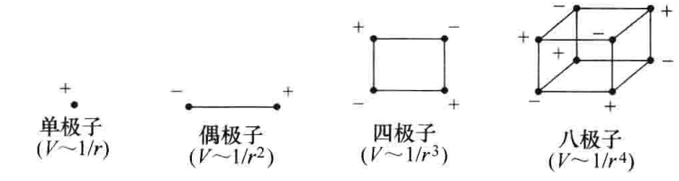
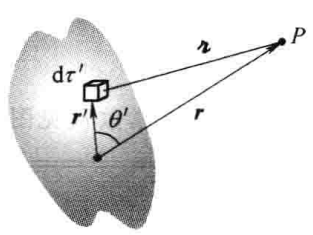

考虑一个远小于光波长尺度的任意材料系统，称之为粒子.
尽管其尺度小于波长量级，但此粒子仍由原子或分子组成.
宏观尺度下，\(\rho\)与\(\boldsymbol{j}\)可以视为空间位置的连续函数.
然而，原子与分子由空间上离散分布的电荷组成.
因此，宏观Maxwell方程组没有考虑到物质的微观结构.
宏观场是微观场在局部空间范围内的平均
[令]
$$\rho(\boldsymbol{r}) = \sum_n q_n\delta[\boldsymbol{r} - \boldsymbol{r}_n]$$ $$\boldsymbol{j}(\boldsymbol{r}) = \sum_n q_n\dot{\boldsymbol{r}}_n\delta[\boldsymbol{r} - \boldsymbol{r}_n]$$\(\rho,\boldsymbol{j}\)仍为\(t\)的函数，因为\(\boldsymbol{r}_n(t)\).
[注]此处忽略了产生入射电场\(\boldsymbol{E}_{inc}\)的源电流密度\(\boldsymbol{j}_s\)，因为其不属于该系统.
[注]此处将感生传导电流密度\(\boldsymbol{j}_c\)并入了极化电流密度中.
?散度有逆运算？
以粒子中心为原点，令\(\boldsymbol{r} = 0\)，对\(\boldsymbol{E}_{inc}\)做Taylor展开，得：
$$\boldsymbol{E}_{inc}(s\boldsymbol{r}_n) = \boldsymbol{E}_{inc}(0) + [s\boldsymbol{r}_n\cdot\nabla]\boldsymbol{E}_{inc}(0) + \frac{1}{2!}[s\boldsymbol{r}_n\cdot\nabla]^2\boldsymbol{E}_{inc}(0) + \cdots$$ $$\begin{align} V_E = &-\sum_nq_n\boldsymbol{r}_n\cdot\boldsymbol{E}_{inc}(0)\\ &-\sum_n\frac{q_n}{2!}\boldsymbol{r}_n\cdot[\boldsymbol{r}_n\cdot\nabla]\boldsymbol{E}_{inc}(0)\\ &-\sum_n\frac{q_n}{3!}\boldsymbol{r}_n\cdot[\boldsymbol{r}_n\cdot\nabla]^2\boldsymbol{E}_{inc}(0)\\ &-\cdots \end{align}$$\(V_E\)的第一项为电偶极相互作用：
$$V_E^{(1)} = -\boldsymbol{p}\cdot\boldsymbol{E}_{\text{inc}}(0)$$\(V_E\)的第二项为电四极相互作用：
$$V_E^{(2)} = -[\overleftrightarrow{\boldsymbol{Q}}\nabla]\cdot\boldsymbol{E}_{\text{inc}}(0)$$远离一个局域电荷分布时，可以将其看作一个总电荷为\(Q\)的点电荷.
其电势可以近似为\(\frac{1}{4\pi\epsilon_0}\frac{Q}{r}\).
求远离电偶极子处的电势
$$V(\boldsymbol{r}) = \frac{1}{4\pi\epsilon_0}\left(\frac{q}{r_+} - \frac{q}{r_-}\right)$$由余弦定理：
$$\begin{align} r_+^2 &= (d/2)^2 + r^2 - 2(d/2)r\cos\theta\\ &= \frac{d^2}{4} + r^2 - dr\cos\theta\\ &= r^2\left(1 + \frac{d^2}{4r^2} - \frac{d}{r}\cos\theta\right)\\ \end{align}$$ $$\begin{align} r_-^2 &= (d/2)^2 + r^2 - 2(d/2)r\cos(\pi - \theta)\\ &= \frac{d^2}{4} + r^2 + dr\cos\theta\\ &= r^2\left(1 + \frac{d^2}{4r^2} + \frac{d}{r}\cos\theta\right) \end{align}$$我们对\(r\gg d\)的区域感兴趣，因此：
$$d/r\rightarrow 0$$ $$\therefore \frac{d^2}{4r^2} \pm \frac{d}{r}\cos\theta \rightarrow 0$$ $$\because (1 + x)^\alpha \approx 1 + \alpha x,\quad x \to 0$$ $$\begin{align} \therefore \frac{1}{r_\pm} &= \frac{1}{r}\left(1 - \frac{d^2}{4r^2} \mp \frac{d}{r}\cos\theta\right)^{-1/2}\\ &\approx \frac{1}{r}\left(1 + \frac{d^2}{8r^2} \pm \frac{d}{2r}\cos\theta\right)\\ \end{align}$$ $$\therefore \frac{1}{r_+}-\frac{1}{r_-} \approx \frac{d}{r^2}\cos\theta$$ $$\therefore V(\boldsymbol{r}) \approx \frac{1}{4\pi\epsilon_0}\frac{qd\cos\theta}{r^2}$$
对于任意局域电荷分布，介绍一种以\(1/r\)幂次系统展开的方法.

由余弦定理：
$$\begin{align} r_0^2 &= r^2 + r'^2 - 2r r'\cos\theta\\ &= r^2\left[1 + \left(\frac{r'}{r}\right)^2 - 2\left(\frac{r'}{r}\right)\cos\theta\right] \end{align}$$[令]
$$\epsilon\equiv\left(\frac{r'}{r}\right)^2 - 2\left(\frac{r'}{r}\right)\cos\theta$$这里的\(\epsilon\)与介电常数没有关系.
对于电荷分布区域外的点，有：
$$\epsilon\rightarrow 0$$由Taylor展开：
$$\begin{align} \frac{1}{r_0} &= \frac{1}{r}\left(1 + \epsilon\right)^{-1/2}\\ &= \frac{1}{r}\left(1 - \frac{1}{2}\epsilon + \frac{3}{8}\epsilon^2 - \frac{5}{16}\epsilon^3 + \cdots\right)\\ \end{align}$$或者用\(r, r', \theta'\)表示：
$$\begin{align} \frac{1}{r_0} &= \frac{1}{r}\left[1 - \frac{1}{2}\left(\frac{r'}{r}\right)\left(\frac{r'}{r} - 2\cos\theta\right) + \frac{3}{8}\left(\frac{r'}{r}\right)^2\left(\frac{r'}{r} - 2\cos\theta\right)^2 - \frac{5}{16}\left(\frac{r'}{r}\right)^3\left(\frac{r'}{r} - 2\cos\theta\right)^3 + \cdots\right]\\ &= \frac{1}{r}\left[1 + \left(\frac{r'}{r}\cos\theta\right) + \left(\frac{r'}{r}\right)^2(3\cos\theta - 1)/2 + \left(\frac{r'}{r}\right)^3(5\cos^3\theta - 3\cos\theta)/2 + \cdots\right] \end{align}$$按\(r'/r\)的幂次合并同类项后，可以发现其系数为勒让德多项式.
$$\therefore \frac{1}{r_0} = \frac{1}{r}\sum_{n=0}^\infty\left(\frac{r'}{r}\right)^nP_n(\cos\theta)$$注意涉及积分时\(r\)为常数，将上式代入电势表达式中，得：
$$\begin{align} V(\boldsymbol{r}) &= \frac{1}{4\pi\epsilon_0}\sum_{n=0}^\infty\frac{1}{r^{(n+1)}}\int(r')^nP_n(\cos\theta)\rho(\boldsymbol{r}')\mathrm{d}\tau\\ &= \frac{1}{4\pi\epsilon_0}\left[\frac{1}{r}\int\rho(\boldsymbol{r}')\mathrm{d}\tau + \frac{1}{r^2}\int r'\cos\theta\rho(\theta)\mathrm{d}\tau + \frac{1}{r^3}\int(r')^2\left(\frac{3}{2}\cos^2\theta - \frac{1}{2}\right)\rho(\boldsymbol{r}')\mathrm{d}\tau + \cdots\right] \end{align}$$可以看出，\(V\)是按\(1/r\)幂次的多极展开.
第一项\(n=0\)是单极子的贡献（按\(1/r\)减小）；第二项\(n=1\)为偶极子（按\(1/r^2\)；第三项为四极子；第四项为八极子……
通常，多极展开中的主要贡献来源于单极项：
$$V_{单极}(\boldsymbol{r}) = \frac{1}{4\pi\epsilon_0}\frac{Q}{r}$$这正是远离电荷处我们所预期的近似电势.
对恰巧位于原点的点电荷，\(V_{单极}\)就是所有地方的严格电势，而不仅仅是对大\(r\)处的一级近似；对这种情况，所有高阶的多极矩为\(0\).
若总电荷为\(0\)，对电势的主要贡献是偶极（除非它也为\(0\)）：
$$V_{偶极}(\boldsymbol{r}) = \frac{1}{4\pi\epsilon_0}\frac{1}{r^2}\int r'\cos\theta\rho(\boldsymbol{r}')\mathrm{d}\tau$$由于\(\theta\)为\(\boldsymbol{r}\)与\(\boldsymbol{r}'\)的夹角：
$$\therefore r'\cos\theta = \hat{\boldsymbol{r}}\cdot\boldsymbol{r}'$$偶极势可以更有趣地表示为：
$$V_{偶极}(\boldsymbol{r}) = \frac{1}{4\pi\epsilon_0}\frac{1}{r^2}\hat{\boldsymbol{r}}\cdot\int\boldsymbol{r}'\rho(\boldsymbol{r}')\mathrm{d}\tau$$式中完全不依赖于\(\boldsymbol{r}\)的积分，称为电荷分布的偶极矩：
$$\boldsymbol{p}\equiv \int\boldsymbol{r}'\rho(\boldsymbol{r}')\mathrm{d}\tau$$偶极矩对电势的贡献可以简单表示为：
$$V_{偶极}(\boldsymbol{r}) = \frac{1}{4\pi\epsilon_0}\frac{\boldsymbol{p}\cdot\hat{\boldsymbol{r}}}{r^2}$$由电荷\(q_n\)构成的分布中，各电荷的位置矢量为\(\boldsymbol{r}_n\)、速度为\(\dot{\boldsymbol{r}}_n\)，其产生的电流密度由下式给出：
$$\boldsymbol{j}(\boldsymbol{r}) = \sum_n q_n\dot{\boldsymbol{r}}_n\delta[\boldsymbol{r} - \boldsymbol{r}_n]$$取电荷中心\(\boldsymbol{r}_0\)为原点，对上式进行Taylor展开，保留最低阶项，得：
$$\boldsymbol{j}(\boldsymbol{r}, t) = \frac{\mathrm{d}}{\mathrm{d}t}\boldsymbol{p}(t)\delta[\boldsymbol{r}-\boldsymbol{r}_0]$$偶极矩为：
$$\boldsymbol{p}(t) = \sum_nq_n[\boldsymbol{r}_n(t) - \boldsymbol{r}_0]$$这与上式中对偶极矩的定义是一样的，只是上式中取了\(\boldsymbol{r}_0 = 0\).
假设其为简谐时间依赖的，则：
$$\boldsymbol{j}(\boldsymbol{r}, t) = \text{Re}\{\boldsymbol{j}(\boldsymbol{r})e^{-i\omega t}\}$$ $$\boldsymbol{p}(t) = \text{Re}\{\boldsymbol{p}e^{-i\omega t}\}$$因此，在最低阶近似下，任意电流密度都可以看作一个以电荷分布中心为原点的电偶极子.